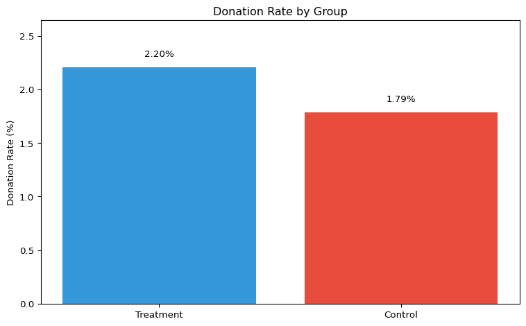
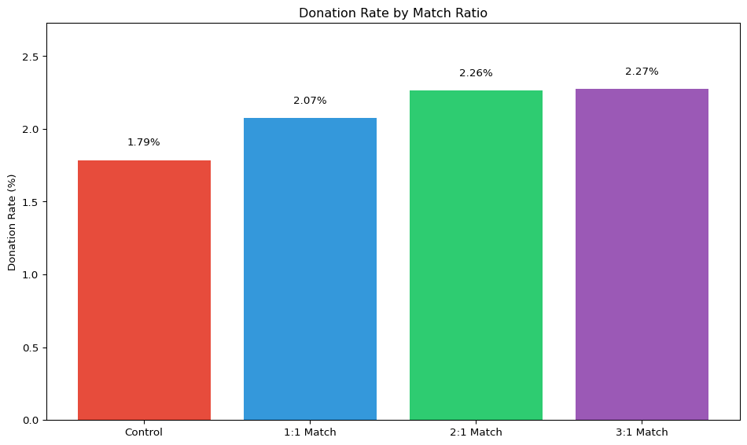
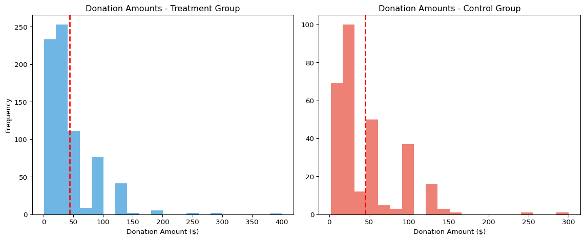
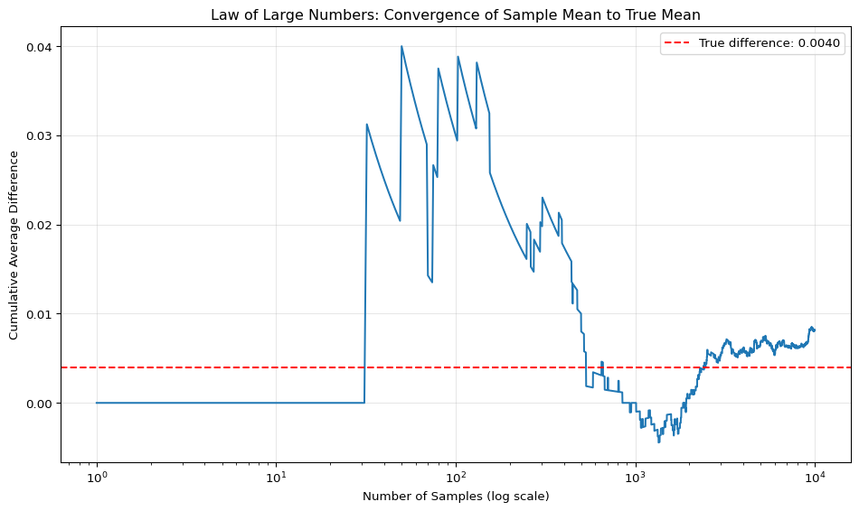
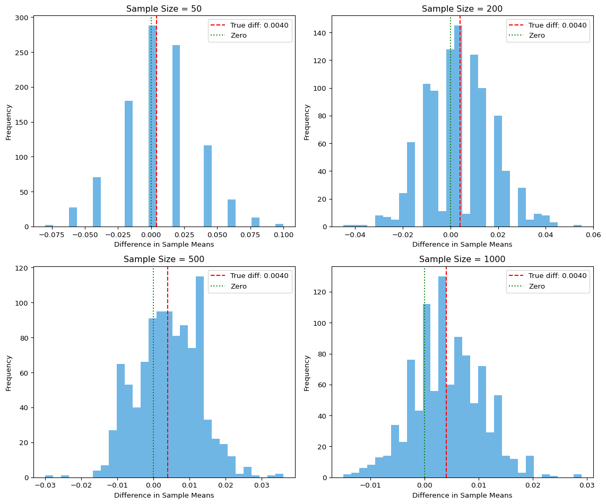

# Import necessary libraries
import pandas as pd
import numpy as np
import matplotlib.pyplot as plt
import seaborn as sns
from scipy import stats
import statsmodels.api as sm
import statsmodels.formula.api as smf
# Load the data
data = pd.read_stata("karlan_list_2007.dta")
# SECTION: Data Description
print("Data Description:")
print(f"This dataset contains {data.shape[0]} observations and {data.shape[1]} variables.")
print(f"The data comes from a field experiment testing the effectiveness of different fundraising approaches.")
print(f"Treatment group size: {data['treatment'].sum()} ({data['treatment'].mean()*100:.1f}%)")
print(f"Control group size: {data['control'].sum()} ({data['control'].mean()*100:.1f}%)")
# SECTION: Data Balance Test
print("\nData Balance Test:")
print(f"Missing values in hpa: {data['hpa'].isna().sum()}")
# Balance test using highest previous contribution (hpa)
t_stat, p_value = stats.ttest_ind(
data[data['treatment'] == 1]['hpa'].dropna(),
data[data['control'] == 1]['hpa'].dropna(),
equal_var=False
)
print(f"Balance test for highest previous contribution (hpa):")
print(f"T-statistic: {t_stat:.4f}, P-value: {p_value:.4f}")
print(f"Statistically significant difference at 5% level: {p_value < 0.05}")
# Same test using regression
model = sm.OLS(data['hpa'].dropna(), sm.add_constant(data.loc[data['hpa'].notna(), 'treatment'])).fit()
print("Regression test for balance:")
print(model.summary().tables[1])
# SECTION: Experimental Results Charitable Contribution Made
print("\nExperimental Results Charitable Contribution Made:")
donation_rate_treatment = data[data['treatment'] == 1]['gave'].mean() * 100
donation_rate_control = data[data['control'] == 1]['gave'].mean() * 100
print(f"Donation rate in treatment group: {donation_rate_treatment:.2f}%")
print(f"Donation rate in control group: {donation_rate_control:.2f}%")
# Create a bar plot comparing treatment vs control donation rates
plt.figure(figsize=(8, 5))
plt.bar(['Treatment', 'Control'], [donation_rate_treatment, donation_rate_control],
color=['#3498db', '#e74c3c'])
plt.ylabel('Donation Rate (%)')
plt.title('Donation Rate by Group')
plt.ylim(0, max(donation_rate_treatment, donation_rate_control) * 1.2)
for i, rate in enumerate([donation_rate_treatment, donation_rate_control]):
plt.text(i, rate + 0.1, f'{rate:.2f}%', ha='center')
plt.tight_layout()
plt.show()
# T-test for donation rates
t_stat, p_value = stats.ttest_ind(
data[data['treatment'] == 1]['gave'],
data[data['control'] == 1]['gave'],
equal_var=False
)
print(f"T-test for donation rates (gave):")
print(f"T-statistic: {t_stat:.4f}, P-value: {p_value:.4f}")
print(f"Statistically significant difference at 5% level: {p_value < 0.05}")
# Linear regression for donation rates
model = sm.OLS(data['gave'], sm.add_constant(data['treatment'])).fit()
print("Linear regression for donation rates:")
print(model.summary().tables[1])
# Probit regression for donation rates
probit_model = sm.Probit(data['gave'], sm.add_constant(data['treatment'])).fit()
print("Probit regression for donation rates:")
print(probit_model.summary().tables[1])
# Calculate marginal effects for probit
margeff = probit_model.get_margeff()
print("Marginal effects from probit model:")
print(margeff.summary_frame())
# SECTION: Experimental Results Differences between Match Rates
print("\nExperimental Results Differences between Match Rates:")
# Create ratio1 variable (1:1 match ratio)
data['ratio1'] = ((data['treatment'] == 1) &
(data['ratio2'] == 0) &
(data['ratio3'] == 0)).astype(int)
# Check match ratio distribution
print("Match ratio distribution:")
print(f"1:1 ratio: {data['ratio1'].sum()} ({data['ratio1'].mean()*100:.1f}%)")
print(f"2:1 ratio: {data['ratio2'].sum()} ({data['ratio2'].mean()*100:.1f}%)")
print(f"3:1 ratio: {data['ratio3'].sum()} ({data['ratio3'].mean()*100:.1f}%)")
# Calculate donation rates by match ratio
donation_rate_control = data[data['control'] == 1]['gave'].mean() * 100
donation_rate_ratio1 = data[data['ratio1'] == 1]['gave'].mean() * 100
donation_rate_ratio2 = data[data['ratio2'] == 1]['gave'].mean() * 100
donation_rate_ratio3 = data[data['ratio3'] == 1]['gave'].mean() * 100
print("Donation rates by match ratio:")
print(f"Control (no match): {donation_rate_control:.2f}%")
print(f"1:1 match ratio: {donation_rate_ratio1:.2f}%")
print(f"2:1 match ratio: {donation_rate_ratio2:.2f}%")
print(f"3:1 match ratio: {donation_rate_ratio3:.2f}%")
# T-tests between different match ratios
# 1:1 vs 2:1
t_stat, p_value = stats.ttest_ind(
data[data['ratio1'] == 1]['gave'],
data[data['ratio2'] == 1]['gave'],
equal_var=False
)
print(f"T-test for 1:1 vs 2:1 match ratio:")
print(f"T-statistic: {t_stat:.4f}, P-value: {p_value:.4f}")
print(f"Statistically significant difference at 5% level: {p_value < 0.05}")
# 2:1 vs 3:1
t_stat, p_value = stats.ttest_ind(
data[data['ratio2'] == 1]['gave'],
data[data['ratio3'] == 1]['gave'],
equal_var=False
)
print(f"T-test for 2:1 vs 3:1 match ratio:")
print(f"T-statistic: {t_stat:.4f}, P-value: {p_value:.4f}")
print(f"Statistically significant difference at 5% level: {p_value < 0.05}")
# Regression with all match ratios
model = sm.OLS(data['gave'], sm.add_constant(data[['ratio1', 'ratio2', 'ratio3']])).fit()
print("Regression with all match ratios:")
print(model.summary().tables[1])
# Create a bar plot comparing donation rates by match ratio
plt.figure(figsize=(10, 6))
labels = ['Control', '1:1 Match', '2:1 Match', '3:1 Match']
rates = [donation_rate_control, donation_rate_ratio1, donation_rate_ratio2, donation_rate_ratio3]
plt.bar(labels, rates, color=['#e74c3c', '#3498db', '#2ecc71', '#9b59b6'])
plt.ylabel('Donation Rate (%)')
plt.title('Donation Rate by Match Ratio')
plt.ylim(0, max(rates) * 1.2)
for i, rate in enumerate(rates):
plt.text(i, rate + 0.1, f'{rate:.2f}%', ha='center')
plt.tight_layout()
plt.show()
# SECTION: Experimental Results Size of Charitable Contribution
print("\nExperimental Results Size of Charitable Contribution:")
print("Donation amount analysis (full sample):")
print(f"Mean donation in control group: ${data[data['control'] == 1]['amount'].mean():.2f}")
print(f"Mean donation in treatment group: ${data[data['treatment'] == 1]['amount'].mean():.2f}")
# T-test for donation amounts
t_stat, p_value = stats.ttest_ind(
data[data['treatment'] == 1]['amount'],
data[data['control'] == 1]['amount'],
equal_var=False
)
print(f"T-test for donation amounts:")
print(f"T-statistic: {t_stat:.4f}, P-value: {p_value:.4f}")
print(f"Statistically significant difference at 5% level: {p_value < 0.05}")
# Linear regression for donation amounts
model = sm.OLS(data['amount'], sm.add_constant(data['treatment'])).fit()
print("Bivariate linear regression of amount on treatment:")
print(model.summary().tables[1])
# Analyze donation amounts conditional on donating
donors = data[data['gave'] == 1]
print(f"Donation amount analysis (donors only, n={len(donors)}):")
print(f"Mean donation among donors in control group: ${donors[donors['control'] == 1]['amount'].mean():.2f}")
print(f"Mean donation among donors in treatment group: ${donors[donors['treatment'] == 1]['amount'].mean():.2f}")
# T-test for donation amounts among donors
t_stat, p_value = stats.ttest_ind(
donors[donors['treatment'] == 1]['amount'],
donors[donors['control'] == 1]['amount'],
equal_var=False
)
print(f"T-test for donation amounts among donors:")
print(f"T-statistic: {t_stat:.4f}, P-value: {p_value:.4f}")
print(f"Statistically significant difference at 5% level: {p_value < 0.05}")
# Linear regression for donation amounts among donors
model = sm.OLS(donors['amount'], sm.add_constant(donors['treatment'])).fit()
print("Bivariate linear regression of amount on treatment (donors only):")
print(model.summary().tables[1])
# Create histograms of donation amounts for treatment and control groups (donors only)
plt.figure(figsize=(12, 5))
# Treatment group histogram
plt.subplot(1, 2, 1)
treatment_amounts = donors[donors['treatment'] == 1]['amount']
plt.hist(treatment_amounts, bins=20, alpha=0.7, color='#3498db')
plt.axvline(treatment_amounts.mean(), color='red', linestyle='dashed', linewidth=2)
plt.title('Donation Amounts - Treatment Group')
plt.xlabel('Donation Amount ($)')
plt.ylabel('Frequency')
# Control group histogram
plt.subplot(1, 2, 2)
control_amounts = donors[donors['control'] == 1]['amount']
plt.hist(control_amounts, bins=20, alpha=0.7, color='#e74c3c')
plt.axvline(control_amounts.mean(), color='red', linestyle='dashed', linewidth=2)
plt.title('Donation Amounts - Control Group')
plt.xlabel('Donation Amount ($)')
plt.tight_layout()
plt.show()
# SECTION: Simulation Experiment Law of Large Numbers
print("\nSimulation Experiment Law of Large Numbers:")
np.random.seed(42)
# Define the true probabilities
p_control = 0.018 # probability of donation in control group
p_treatment = 0.022 # probability of donation in treatment group
true_diff = p_treatment - p_control
n_simulations = 10000
# Generate random samples
control_samples = np.random.binomial(1, p_control, n_simulations)
treatment_samples = np.random.binomial(1, p_treatment, n_simulations)
differences = treatment_samples - control_samples
# Calculate cumulative means
cumulative_means = np.cumsum(differences) / np.arange(1, n_simulations + 1)
# Plot the Law of Large Numbers demonstration
plt.figure(figsize=(10, 6))
plt.plot(range(1, n_simulations + 1), cumulative_means)
plt.axhline(y=true_diff, color='r', linestyle='--', label=f'True difference: {true_diff:.4f}')
plt.xscale('log')
plt.xlabel('Number of Samples (log scale)')
plt.ylabel('Cumulative Average Difference')
plt.title('Law of Large Numbers: Convergence of Sample Mean to True Mean')
plt.legend()
plt.grid(True, alpha=0.3)
plt.tight_layout()
plt.show()
# SECTION: Simulation Experiment Central Limit Theorem
print("\nSimulation Experiment Central Limit Theorem:")
sample_sizes = [50, 200, 500, 1000]
n_experiments = 1000
# Create a figure with 4 subplots
fig, axes = plt.subplots(2, 2, figsize=(12, 10))
axes = axes.flatten()
for i, sample_size in enumerate(sample_sizes):
# Storage for sample means
sample_means = np.zeros(n_experiments)
# Run n_experiments experiments
for j in range(n_experiments):
# Generate random samples of size sample_size
control_sample = np.random.binomial(1, p_control, sample_size)
treatment_sample = np.random.binomial(1, p_treatment, sample_size)
# Calculate the difference in means
control_mean = np.mean(control_sample)
treatment_mean = np.mean(treatment_sample)
sample_means[j] = treatment_mean - control_mean
# Plot histogram of sample means
axes[i].hist(sample_means, bins=30, alpha=0.7, color='#3498db')
axes[i].axvline(x=true_diff, color='r', linestyle='--', label=f'True diff: {true_diff:.4f}')
axes[i].axvline(x=0, color='g', linestyle=':', label='Zero')
axes[i].set_title(f'Sample Size = {sample_size}')
axes[i].set_xlabel('Difference in Sample Means')
axes[i].set_ylabel('Frequency')
axes[i].legend()
# Calculate and display standard error
std_error = np.sqrt((p_control * (1 - p_control) / sample_size) +
(p_treatment * (1 - p_treatment) / sample_size))
print(f"Sample size {sample_size}: Standard Error = {std_error:.6f}")
# Calculate percentage of samples where difference > 0
pct_positive = np.mean(sample_means > 0) * 100
print(f"Sample size {sample_size}: Percentage of samples with positive difference = {pct_positive:.2f}%")
plt.tight_layout()
plt.show()Data Description:
This dataset contains 50083 observations and 51 variables.
The data comes from a field experiment testing the effectiveness of different fundraising approaches.
Treatment group size: 33396 (66.7%)
Control group size: 16687 (33.3%)
Data Balance Test:
Missing values in hpa: 0
Balance test for highest previous contribution (hpa):
T-statistic: 0.9704, P-value: 0.3318
Statistically significant difference at 5% level: False
Regression test for balance:
==============================================================================
coef std err t P>|t| [0.025 0.975]
------------------------------------------------------------------------------
const 58.9602 0.551 107.005 0.000 57.880 60.040
treatment 0.6371 0.675 0.944 0.345 -0.685 1.960
==============================================================================
Experimental Results Charitable Contribution Made:
Donation rate in treatment group: 2.20%
Donation rate in control group: 1.79%
T-test for donation rates (gave):
T-statistic: 3.2095, P-value: 0.0013
Statistically significant difference at 5% level: True
Linear regression for donation rates:
==============================================================================
coef std err t P>|t| [0.025 0.975]
------------------------------------------------------------------------------
const 0.0179 0.001 16.225 0.000 0.016 0.020
treatment 0.0042 0.001 3.101 0.002 0.002 0.007
==============================================================================
Optimization terminated successfully.
Current function value: 0.100443
Iterations 7
Probit regression for donation rates:
==============================================================================
coef std err z P>|z| [0.025 0.975]
------------------------------------------------------------------------------
const -2.1001 0.023 -90.073 0.000 -2.146 -2.054
treatment 0.0868 0.028 3.113 0.002 0.032 0.141
==============================================================================
Marginal effects from probit model:
dy/dx Std. Err. z Pr(>|z|) Conf. Int. Low \
treatment 0.004313 0.001389 3.104419 0.001907 0.00159
Cont. Int. Hi.
treatment 0.007036
Experimental Results Differences between Match Rates:
Match ratio distribution:
1:1 ratio: 11133 (22.2%)
2:1 ratio: 11134 (22.2%)
3:1 ratio: 11129 (22.2%)
Donation rates by match ratio:
Control (no match): 1.79%
1:1 match ratio: 2.07%
2:1 match ratio: 2.26%
3:1 match ratio: 2.27%
T-test for 1:1 vs 2:1 match ratio:
T-statistic: -0.9650, P-value: 0.3345
Statistically significant difference at 5% level: False
T-test for 2:1 vs 3:1 match ratio:
T-statistic: -0.0501, P-value: 0.9600
Statistically significant difference at 5% level: False
Regression with all match ratios:
==============================================================================
coef std err t P>|t| [0.025 0.975]
------------------------------------------------------------------------------
const 0.0179 0.001 16.225 0.000 0.016 0.020
ratio1 0.0029 0.002 1.661 0.097 -0.001 0.006
ratio2 0.0048 0.002 2.744 0.006 0.001 0.008
ratio3 0.0049 0.002 2.802 0.005 0.001 0.008
==============================================================================
Experimental Results Size of Charitable Contribution:
Donation amount analysis (full sample):
Mean donation in control group: $0.81
Mean donation in treatment group: $0.97
T-test for donation amounts:
T-statistic: 1.9183, P-value: 0.0551
Statistically significant difference at 5% level: False
Bivariate linear regression of amount on treatment:
==============================================================================
coef std err t P>|t| [0.025 0.975]
------------------------------------------------------------------------------
const 0.8133 0.067 12.063 0.000 0.681 0.945
treatment 0.1536 0.083 1.861 0.063 -0.008 0.315
==============================================================================
Donation amount analysis (donors only, n=1034):
Mean donation among donors in control group: $45.54
Mean donation among donors in treatment group: $43.87
T-test for donation amounts among donors:
T-statistic: -0.5846, P-value: 0.5590
Statistically significant difference at 5% level: False
Bivariate linear regression of amount on treatment (donors only):
==============================================================================
coef std err t P>|t| [0.025 0.975]
------------------------------------------------------------------------------
const 45.5403 2.423 18.792 0.000 40.785 50.296
treatment -1.6684 2.872 -0.581 0.561 -7.305 3.968
==============================================================================
Simulation Experiment Law of Large Numbers:
Simulation Experiment Central Limit Theorem:
Sample size 50: Standard Error = 0.027997
Sample size 50: Percentage of samples with positive difference = 43.20%
Sample size 200: Standard Error = 0.013999
Sample size 200: Percentage of samples with positive difference = 55.20%
Sample size 500: Standard Error = 0.008853
Sample size 500: Percentage of samples with positive difference = 64.50%
Sample size 1000: Standard Error = 0.006260
Sample size 1000: Percentage of samples with positive difference = 73.80%